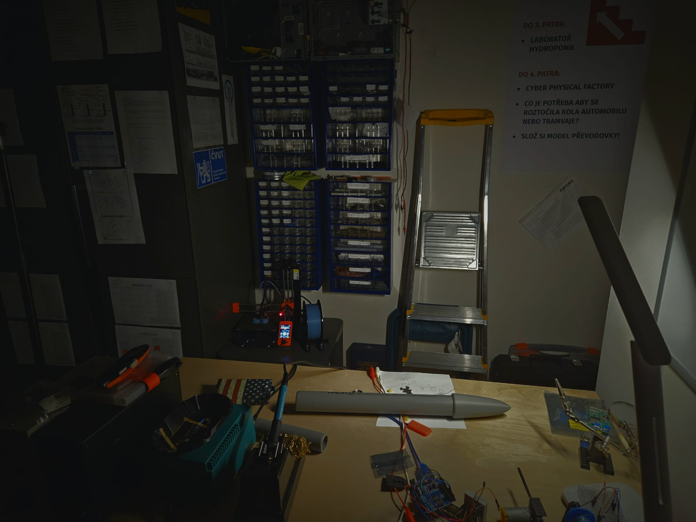
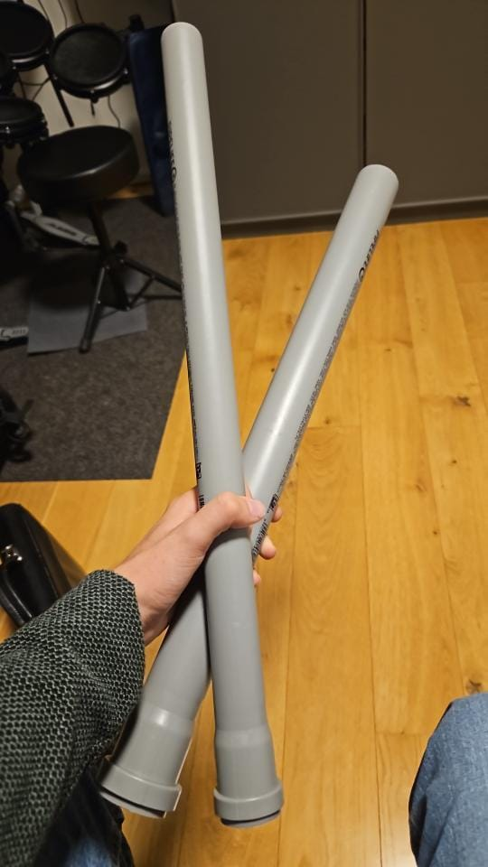
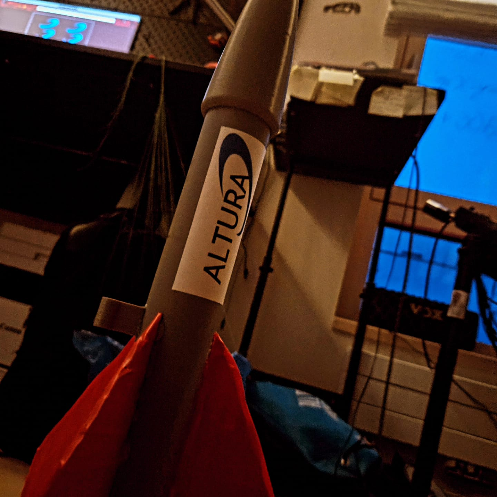

Výzkum a technika
Jsme studentská skupina posouvající hranice amatérské kosmonautiky skrze precizní data a inovativní inženýrství.

Digitální vývoj
Základem každého našeho startu je detailní počítačová simulace. Používáme software OpenRocket pro návrh aerodynamiky a stability. Každý letový profil pečlivě analyzujeme, abychom předpověděli apogeum a namáhání konstrukce ještě předtím, než se dotkneme materiálu v dílně.

Studentský vývoj
V našich laboratořích vyvíjíme vlastní software pro palubní počítače a telemetrii. Snažíme se sbírat co nejvíce dat v reálném čase – od zrychlení a rotace až po atmosférický tlak. Tento vědecký přístup nám umožňuje neustále vylepšovat naše budoucí návrhy.

Nová paliva a konstrukce
Experimentujeme s novými druhy tuhých paliv pro dosažení vyššího specifického impulsu. Zároveň testujeme odolnost materiálů pro těla raket (např. upravené polymerové směsi), aby naše stroje byly lehké, ale dostatečně pevné pro překonávání zvukové bariéry.

Od nápadu k letu
Naše práce nekončí u výpočtů. Všechny teoretické poznatky přetavujeme do reálných prototypů. Každá raketa pod značkou Altura je výsledkem stovek hodin práce studentů, kteří věří, že vesmír je dostupný pro každého, kdo má odvahu zkoumat.